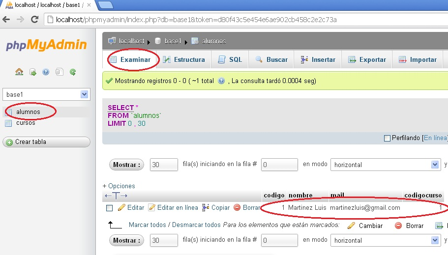

Luego de crear una base de datos y sus tablas (Vamos a trabajar con la base de datos ya creada: base1, que contiene la tabla alumnos), veremos como agregar registros.
Para añadir datos en la tabla empleamos el comando SQL llamado insert.
Necesitamos dos páginas para este proceso, una será el formulario de carga de datos y la siguiente será la que efectúe la inserción en la tabla.
Formulario de carga de datos:
<html> <head> <title>Problema</title> </head> <body> <h1>Alta de Alumnos</h1> <form action="pagina2.php" method="post"> Ingrese nombre: <input type="text" name="nombre"><br> Ingrese mail: <input type="text" name="mail"><br> Seleccione el curso: <select name="codigocurso"> <option value="1">PHP</option> <option value="2">ASP</option> <option value="3">JSP</option> </select> <br> <input type="submit" value="Registrar"> </form> </body> </html>
El formulario es bastante similar a los que venimos desarrollando en puntos anteriores, tal vez lo distinto es cómo emplearemos el control "select" del curso a desarrollar:
<select name="codigocurso"> <option value="1">PHP</option> <option value="2">ASP</option> <option value="3">JSP</option> </select>
Cada opción tiene su respectivo valor (en este caso los números 1,2 y 3) y los textos a mostrar PHP, ASP y JSP. El dato que se envía a la otra página es el código de curso (esto debido a que definimos la propiedad value).
Ahora veremos como realizar la registración de los datos cargados en el formulario, en la tabla alumnos de la base de datos base1:
<html>
<html>
<head>
<title>Problema</title>
</head>
<body>
<?php
$conexion=mysqli_connect("localhost","root","","base1") or
die("Problemas con la conexión");
mysqli_query($conexion,"insert into alumnos(nombre,mail,codigocurso) values
('$_REQUEST[nombre]','$_REQUEST[mail]',$_REQUEST[codigocurso])")
or die("Problemas en el select".mysqli_error($conexion));
mysqli_close($conexion);
echo "El alumno fue dado de alta.";
?>
</body>
</html>
Veamos los pasos para efectuar el alta en la tabla alumnos:
$conexion=mysqli_connect("localhost","root","","base1") or
die("Problemas con la conexión");
La función mysqli_connect se conecta a una base de datos de tipo MySql, el primer parámetro es la dirección donde se encuentra el gestor de base de datos (en este caso en el mismo servidor por lo que indicamos esto con "localhost), el segundo parámetro es el nombre de usuario de la base de datos ("root" en nuestro caso, que es el usuario por defecto que crea MySql para el administrador), seguidamente indicamos la clave del usuario root (por defecto al instalar el Wamp se crea con clave vacía) y por último indicamos el nombre de la base de datos a conectarnos (en nuestro ejemplo ya creamos la base de datos llamada: base1 que tiene la tabla alumnos)
En caso de haber algún error en la llamada a la función la misma retorna false por lo que se ejecuta la instrucción seguida del operador or, en nuestro caso llamamos a la función die que detiene la ejecución del programa y muestra el mensaje por pantalla.
El paso más importante es la codificación del comando SQL insert(debemos llamar a la función mysqli_query pasando como primer parámetro la referencia a la conexion y el segundo parámetro es un string con el comando insert):
mysqli_query($conexion,"insert into alumnos(nombre,mail,codigocurso) values
('$_REQUEST[nombre]','$_REQUEST[mail]',$_REQUEST[codigocurso])")
or die("Problemas en el select".mysqli_error($conexion));
La sintaxis del comando insert es bastante sencilla, indicamos el nombre de la tabla y los campos de la tabla a cargar. Luego debemos indicar en el mismo orden los valores a cargar en cada campo (dichos valores los rescatamos del formulario anterior).
Los campos de tipo varchar SQL requiere que encerremos entre comillas simples, esto sucede para el nombre y el mail; en cambio, para el codigocurso esto no debe ser así.
Otra cosa a tener en cuenta es que los subíndices de los vectores asociativos no deben ir entre simples comillas ya que se encuentran dentro de un string, sino se producirá un error.
En caso que MySql detecte un error, retorna false esta función, por lo que se ejecuta la instrucción posterior al or, es decir la función die que mostrará el error generado por MySql llamando a la función mysqli_error().
Por último cerramos la conexión con la base de datos y mostramos un mensaje indicando que la carga se efectuó en forma correcta.
Tener en cuenta que el campo código se generó en forma automática.
Si queremos controlar que el insert se efectuó en forma correcta podemos ingresar al PHPMyAdmin y seleccionar la tabla "alumnos", y en la pestaña "examinar" podremos ver los datos ingresados desde la página que creamos:
Copiar el contenido de este cuadro de texto al NotePad++ y grabarlo en la carpeta c:\wamp\www con un nombre con extensión php (si hay varios cuadros
de texto grabar cada uno en un archivo distinto).
luego abrir el navegador (Chrome, FireFox, IExplorer etc.) y en la barra de direcciones tipear: http://localhost/pagina1.php (o el nombre del
archivo que le dió)
codigo int auto_increment primery_key nombrecurso varchar(40)Utilizar el PHPMyAdmin para la creación de esta tabla.